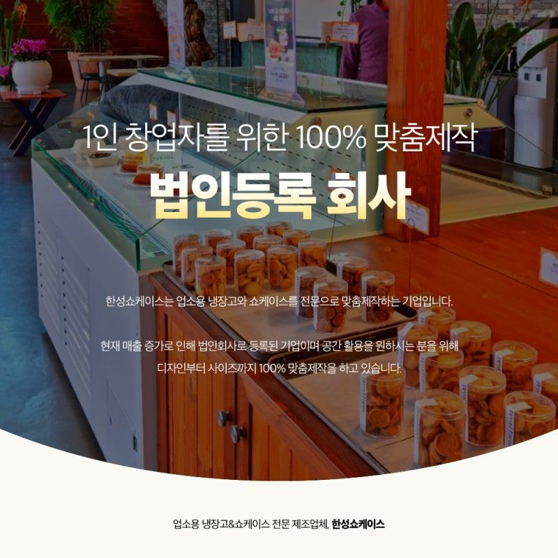
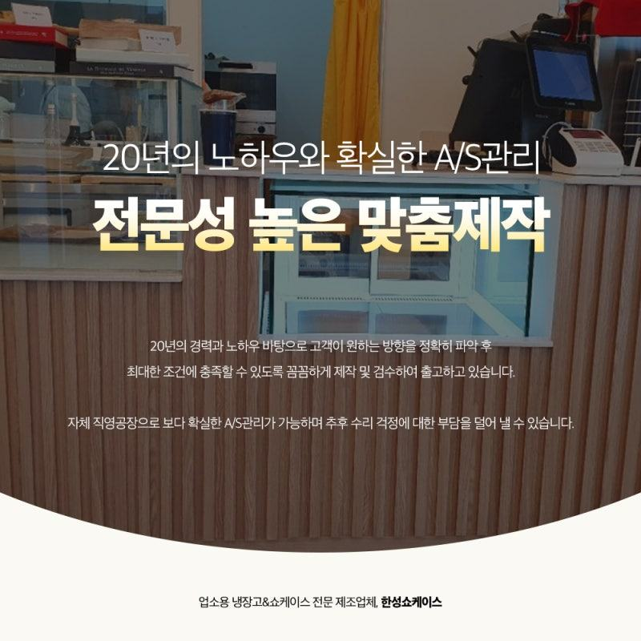
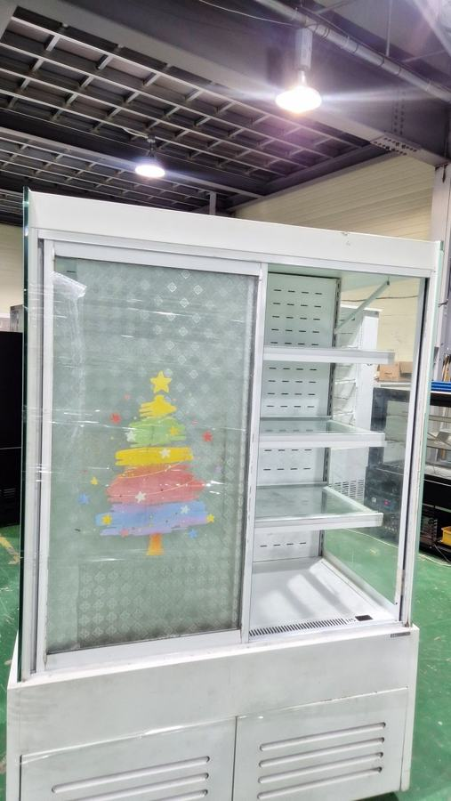
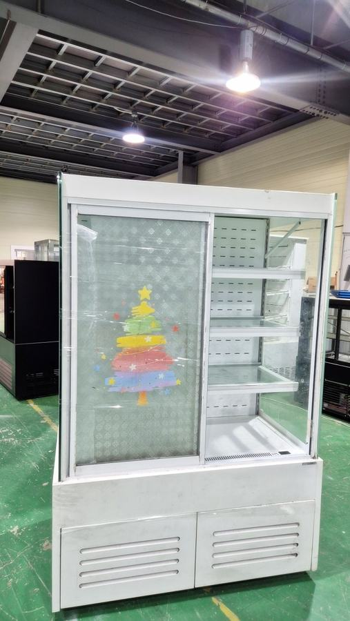
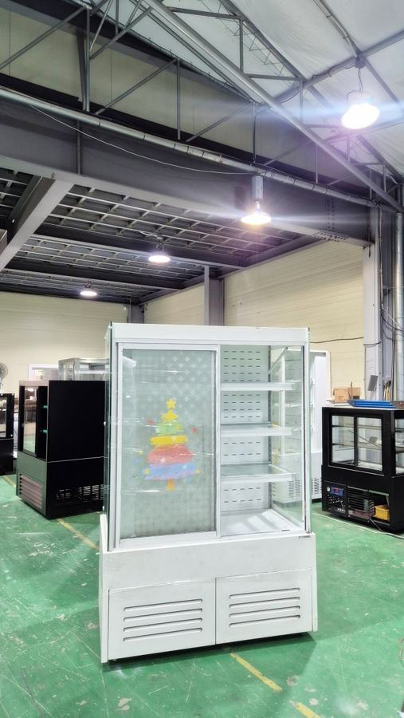
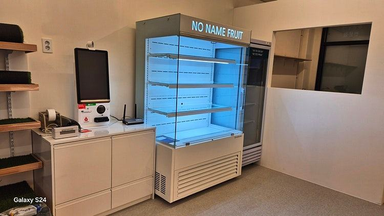
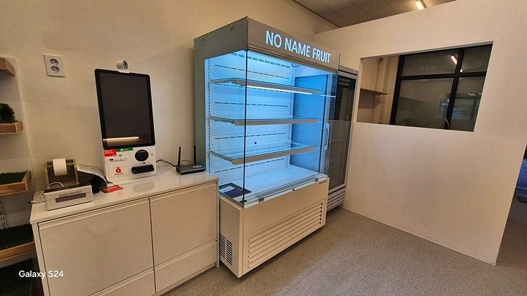

오픈쇼케이스
냉장평대 고장, 증상별로 A/S 부르기 전에 볼 것

냉장평대가 고장 난 것 같을 때는 먼저 설정 온도, 하부 통풍구 막힘, 상품 적재 높이, 배수 상태처럼 사장님이 직접 볼 수 있는 것부터 확인하세요. 그래도 냉기가 돌아오지 않거나 평소와 다른 소리, 타는 냄새, 반복되는 차단기 내려감이 있다면 상품을 옮기고 바로 A/S를 요청하셔야 합니다.
안녕하세요. 냉장평대와 오픈쇼케이스를 맞춤 제작하고 사후관리까지 맡고 있는 한성쇼케이스입니다.
마트나 반찬가게, 정육 코너에서 냉장평대가 갑자기 미지근해지면 사장님 마음이 급해지실 수밖에 없습니다.
위가 열린 구조라 상품이 바로 공기에 닿아 있어, 냉기가 약해지면 상품 상태가 빠르게 변하기 때문입니다.
그런데 A/S 접수를 받고 가 보면 부품 고장이 아니라 통풍구가 막혔거나 설정이 바뀌어 있었던 경우도 적지 않습니다.
반대로 작은 신호를 넘겼다가 큰 고장으로 커진 경우도 있습니다.
오늘은 냉장평대에서 자주 보는 고장 증상별로 사장님이 먼저 확인할 것과, 바로 전문가를 불러야 하는 경우를 나눠 정리해 보겠습니다.
1. 냉기가 약해졌을 때
가장 먼저 설정 온도가 바뀌지 않았는지 확인하세요. 청소하다 조작부를 건드려 설정이 바뀌는 경우가 생각보다 많습니다.
다음은 하부나 뒤쪽 통풍구입니다. 박스나 비닐이 통풍구를 막고 있으면 열이 빠지지 못해 냉기가 약해집니다.
상품을 평대 가장자리보다 높게 쌓아 두었다면 윗부분은 냉기 밖에 놓여 미지근하게 느껴집니다. 이 세 가지를 정리했는데도 몇 시간 안에 온도가 돌아오지 않는다면 냉각 계통 점검이 필요합니다.
평대 위로 냉난방기 바람이 바로 떨어지는 자리라면 그 바람이 냉기 층을 흩뜨려 고장처럼 느껴질 수도 있습니다.
바람 방향을 잠시 돌려 놓고 온도가 회복되는지 보시면 원인을 가리는 데 도움이 됩니다.
- 설정 온도 확인
- 통풍구 막힘 확인
- 상품 적재 높이 확인
2. 성에가 유난히 많이 낄 때
직냉식 평대는 성에가 생기는 것이 자연스럽지만, 평소보다 빠르게 두꺼워진다면 원인을 봐야 합니다. 습한 날씨나 출입문 바람으로 바깥 습기가 많이 들어오는지, 마감 후 덮개 없이 밤새 열려 있었는지부터 확인하세요.
성에가 한쪽에만 몰려 두껍게 생기거나 제상 후에도 금방 다시 덮인다면 온도 제어나 냉기 순환 쪽 이상일 수 있습니다.
이때는 무리하게 긁어내지 말고 점검을 요청하세요.


3. 바닥에 물이 고일 때
평대 아래나 앞쪽 바닥에 물이 고인다면 배수 쪽을 먼저 보세요. 상품 포장 조각이나 채소 잎이 배수구를 막으면 녹은 물이 빠지지 못하고 넘칩니다.
물받이가 있는 제품이라면 가득 차 있지 않은지도 확인하세요.
배수에 문제가 없는데도 계속 물이 샌다면 배관 연결부나 내부 구조 문제일 수 있습니다. 물이 전기 부품 쪽으로 흐를 수 있으니 오래 두지 마시고 점검을 받으세요.
4. 바로 A/S를 불러야 하는 경우
평소와 다른 큰 소리, 덜컥거리는 진동, 타는 냄새가 나거나 차단기가 반복해서 내려간다면 직접 손대지 말고 전원을 내린 뒤 A/S를 요청하세요.
팬 소리가 끊기거나 기계 소리가 멈췄다 이어지기를 반복하는 것도 점검이 필요한 신호입니다.
여름철에는 A/S 접수가 몰려 대기가 길어질 수 있습니다. 성수기 전에 통풍구 청소와 소리 점검을 미리 해 두시고, 접수할 때는 증상이 시작된 시점과 설정 온도, 제품 사진을 함께 전달하시면 기사님이 필요한 부품을 챙겨 와 한 번에 해결될 가능성이 높아집니다.
- 타는 냄새, 반복 차단은 즉시 전원 차단
- 증상 시작 시점과 사진 기록
- 성수기 전 미리 점검
체크리스트
- 설정 온도 변경 여부
- 하부·뒤쪽 통풍구 막힘
- 상품 적재 높이
- 배수구·물받이 상태
- 평소와 다른 소리·냄새
- 차단기 반복 내려감
현장에서 자주 보는 경우: 정형화된 사이즈에 억지로 맞춘 평대
창업이나 리모델링 때 가장 먼저 바꾸는 장비가 평대쇼케이스인데, 시중 제품은 사이즈와 모양이 정형화돼 있어 매장마다 억지로 맞춰 넣는 경우가 많습니다.
통풍 공간 없이 벽이나 진열대 사이에 끼워 넣으면 열이 빠지지 못해 장비에 부담이 커지기 쉽습니다.
그래서 미리 상의해 길이를 재고 그 자리에 맞게 제조한 뒤, 설치하는 중간과 끝에 작동을 여러 번 점검합니다.
쇼케이스는 전자기기라 고장이 날 수 있고 이를 고치는 것도 제조사의 몫이라고 보기 때문에, 설치 후 사후관리도 꾸준히 이어 갑니다.







자주 묻는 질문
냉장평대가 멈추면 상품은 어떻게 해야 하나요?
온도가 돌아오지 않으면 상품을 다른 냉장 설비로 먼저 옮기세요. 상품을 지킨 뒤 증상을 기록해 A/S를 요청하시는 것이 순서입니다.
오래된 평대도 수리가 되나요?
제조사와 부품 수급 여부에 따라 다릅니다. 모델명과 사용 기간을 알려 주시면 수리가 가능한지, 교체가 나은지 함께 판단해 드립니다.
성에를 칼이나 도구로 긁어내도 되나요?
냉각 파이프나 내부 표면이 손상될 수 있어 권하지 않습니다. 전원을 끄고 자연스럽게 녹인 뒤 물기를 닦아 주세요.
매장 조건에 맞춰 만드는 한성쇼케이스
원하시는 제품 사진과 설치할 공간 사진만 보내 주셔도 매장에 맞는 구성을 추천해 드립니다.
- 전국 240여 개 A/S 전담 센터 운영
- 본사 대량 자재 매입으로 품질 대비 합리적인 가격
- 유럽제·삼성 냉각 콤프레셔 적용
- 국내 최초 쇼케이스 전문 디자이너 상주
매장 폭과 원하는 진열 구성을 알려 주세요. 실측과 견적을 안내해 드립니다.
031-986-2458